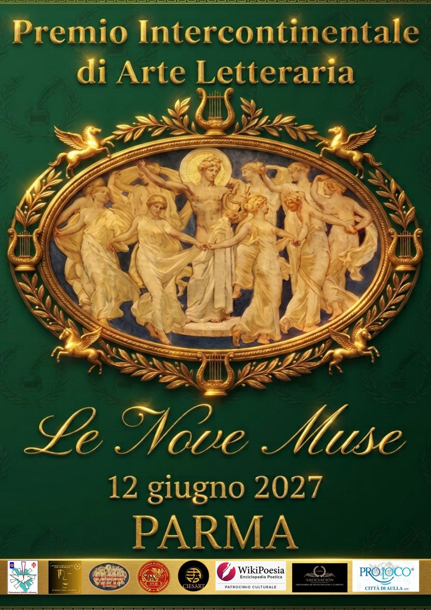

Premio Intercontinentale di Arte Letteraria «Le Nove Muse»
Bando aperto fino al 30 marzo 2027. Cerimonia di premiazione sabato 12 giugno 2027 alla Sala Impero dell'Hotel Stendhal di Parma.

La locandina dell'edizione 2026–27.
Il bando in breve
Organizzazione
Associazione «Culturalmente Toscana e Dintorni», con il Cenacolo Intercontinentale «Le Nove Muse», Ciesart, International Academy, Union Mundial de poetas por la paz y la libertad, Pro Loco Città di Aulla, International Academy of Rome e WikiPoesia. Patrocinio richiesto al Comune di Parma.
Presidenza
Presidente del premio Marina Pratici · vicepresidente Giuseppe Giannotti · presidente onorario Giacomo Bugliani.
Giuria
Presieduta da Matteo Nerbi; giurati Patrizio Avella, Maddalena Baldini, Joan Josep Barcelo, Gianfranco Bontempi, Isabella Garanzini, Mauro Montacchiesi, Marco Profili. Segreteria: Gaia Greco.
Sezioni
Tema libero. A Poesia inedita «Monte Elicona», fino a tre poesie · B Narrativa inedita «Sorgente di Aganippe», un racconto o un saggio · C Poesia edita «Monte Parnaso», un volume · D Narrativa edita e saggistica «Fonte di Ippocrene», un volume. Sono ammessi l'italiano, il dialetto con traduzione e, per la poesia inedita, anche inglese, spagnolo e francese. Premi speciali: Giovani Autori «in memoria di Gabriele Galloni» e Scuole «in memoria dell'insegnante Laura Lazzerini».
Scadenza
30 marzo 2027, fa fede il timbro postale. Invio per posta a Gaia Greco, Viale XX Settembre 227, 54033 Avenza (MS), o per email a gaiags1966@libero.it, con la scheda di partecipazione firmata per ogni sezione.
Contributo
Volontario, 20 € per sezione. Chi non può versarlo partecipa comunque.
Premiazione
Sabato 12 giugno 2027, Sala Impero, Hotel Stendhal, via Bodoni 3, Parma. Targhe e diplomi si consegnano solo in cerimonia, al vincitore o a un delegato; i vincitori sono avvisati in tempo per partecipare. A discrezione della giuria, premi speciali, alla carriera e alla cultura.
Il premio nasce in Toscana dal Cenacolo Intercontinentale «Le Nove Muse» e dall'associazione «Culturalmente Toscana e Dintorni», con Marina Pratici presidente fin dalla prima edizione. Ha la forma di un premio itinerante: ogni anno una città diversa.
2021 · Pisa
Prima edizione. Bando pubblicato a dicembre 2020, scadenza 20 aprile, cerimonia il 22 maggio all'Auditorium «Rino Ricci». In giuria, tra gli altri, Cristiana Vettori e Stefano Massetani.
2022 · Mestre-Venezia
Seconda edizione. Cerimonia l'11 giugno al Centro Culturale Candiani. Giuria presieduta da Isabella Sordi; presidente internazionale Hafez Haidar. Il premio per l'opera prima va all'attrice Daniela Poggi.
2023 · Napoli
Cerimonia il 10 giugno al Teatro Diana, con il patrocinio della Regione Campania e del Comune di Napoli. Madrina Ottavia Piccolo, giuria presieduta da Annella Prisco, premio alla carriera a Gigi Marzullo.
2026–27 · Parma
Il premio riprende con la sede all'Hotel Stendhal. Nuova la vicepresidenza, affidata a Giuseppe Giannotti, e la giuria presieduta da Matteo Nerbi.
Le date e i nomi sono tratti dai bandi pubblicati su concorsiletterari.net e dalle cronache delle cerimonie. Per il regolamento completo e la scheda di partecipazione vale il bando ufficiale.